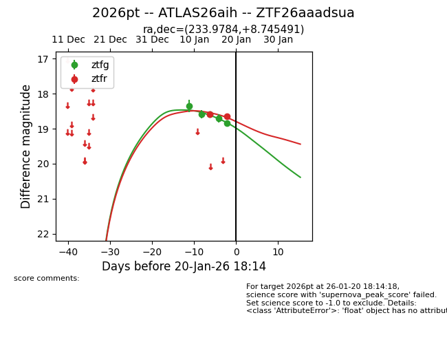
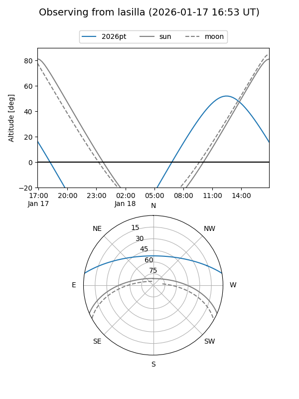
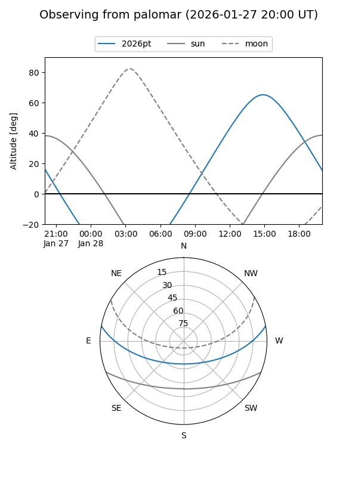
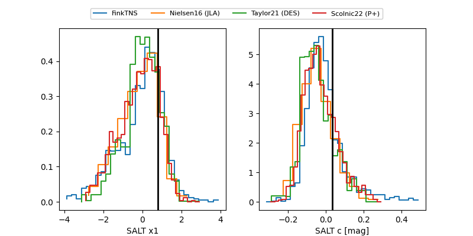

2026pt
Target 2026pt at 2026-01-21 10:41
Aliases and brokers:
FINK: link
Lasair: link
ALeRCE: link
TNS: link
YSE: link
alt names
ZTF26aaadsua (ztf,fink_ztf)
2026pt (tns,yse)
ATLAS26aih (atlas)
Coordinates:
equatorial (ra, dec) = 233.9784,+8.74549
equatorial (HMS+DMS) = 15:35:54.83,+08:44:43.77
galactic (l, b) = (15.4910,+47.05465)
Flags:
Photometry:
last ztfg=18.94, ztfr=18.71
6 ztfg, 3 ztfr detections
Lightcurve

Visibility


Additional plots
